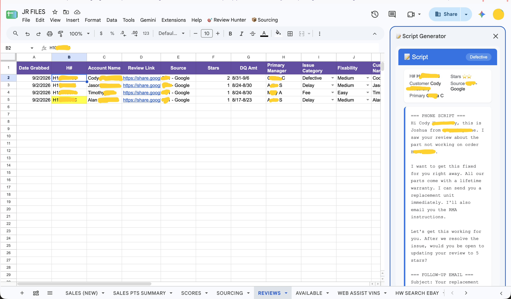

featured case study
View case study →
Review Hunter System
A Google Sheets workspace with a sidebar that turns slow, inconsistent review handling into a fast, tracked workflow.
Problem
Customer feedback that needed a response was handled slowly and inconsistently, with no single place to track what had been done.
Approach
A sidebar that pulls in the latest feedback, drafts a response grounded in what the customer wrote, and tracks each case to resolution.
Result
Reviews get handled faster and consistently, with a record of every one.